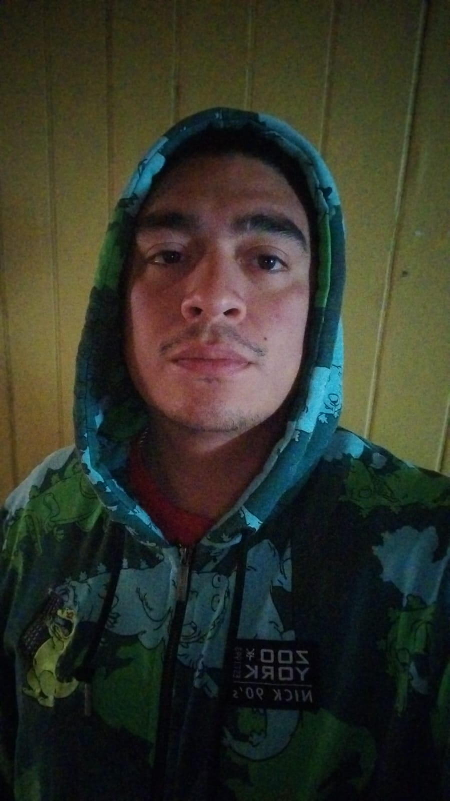

Matías Riveros Uval
📍 Talca, Chile
Email: ceohazeoff@gmail.com
Teléfono: +56 9 7695 2536
Instagram: @riveros.matias
Sobre mí
Me gusta ver partidos y apostar en ellos e ir al casino
Proyectos
- ✅ Iguana Page (HTML & Flexbox)
- ✅ Cuppon (Bootstrap)
- 🛠️ Portafolio GitHub (en proceso)
Educación
Enseñanza media completa
Experiencia Laboral
- 🛢️ Copec - Atención a clientes, manejo de caja
- 🥩 PF Alimentos - Producción, logística